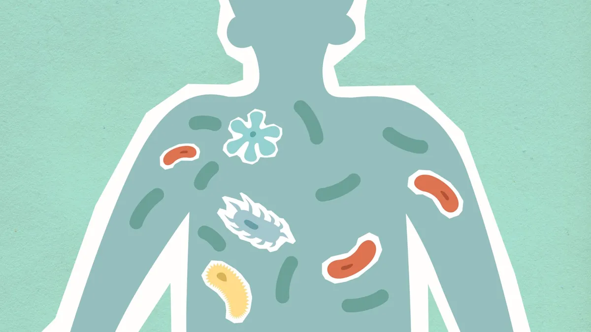

Boost Your Gut Microbiome: The Key to Better Health & Digestion

Key takeaways
- I used to think that feeling “off” was just part of being an adult.
- You know, that sluggishness after lunch, the random headaches, or even feeling a bit more anxious than usual.
- Track what feels sustainable and adjust gradually.
I used to think that feeling “off” was just part of being an adult. You know, that sluggishness after lunch, the random headaches, or even feeling a bit more anxious than usual. For years, I chalked it up to stress or not enough sleep. But then I started digging into the science of the gut microbiome, and it was a total game-changer. Learning how to boost your gut microbiome became the key to unlocking better health & digestion for me, and I'm so excited to share what I've learned.
Think of your gut as a bustling city, and the trillions of bacteria living there are its citizens. When this city is diverse and thriving, everything runs smoothly. When it’s not, things get… messy. This diversity is crucial for everything from how well you digest your food to how strong your immune system is and even how happy you feel.
My own journey started when I noticed my skin breaking out more than it ever did in my teens, coupled with this persistent brain fog. I tried every fancy face cream and drank gallons of water, but nothing truly fixed it. It wasn't until I focused on feeding my gut bacteria the right way that I saw a real difference. It’s not about perfection; it’s about making small, consistent changes that add up.
Increasing the diversity of your gut bacteria can lead to a cascade of positive effects. A robust microbiome helps break down food more efficiently, meaning you absorb more nutrients. It also plays a massive role in training your immune system – a whopping 70% of your immune cells reside in your gut! When your gut is happy, your immune system is better equipped to fight off invaders. Plus, there's a fascinating connection between your gut and your brain, often called the gut-brain axis. A healthy gut can actually lead to a better mood and reduced feelings of anxiety.
The 2-Minute Win
Right now, grab a glass of water and drink it. Hydration is a fundamental, easy win for your gut and overall health. Keep a water bottle nearby to sip from throughout the day.
So, how do we actually cultivate this thriving gut city? It's all about variety in your diet. Think of feeding your gut bacteria like feeding a diverse population – they all have different needs and preferences.
One of the most impactful things I did was consciously adding more fermented foods into my diet. These are foods that have undergone controlled microbial growth and fermentation. Think sauerkraut, kimchi, plain yogurt with live cultures, kefir, and kombucha. These foods are packed with beneficial bacteria, acting like little reinforcements for your gut army. I started small, adding a spoonful of sauerkraut to my lunch salad or swapping my usual morning drink for kefir. It wasn’t an overnight fix, but the gradual improvement was undeniable.
Fiber is another absolute superstar for gut health. Your gut bacteria feast on dietary fiber, producing short-chain fatty acids (SCFAs) like butyrate. These SCFAs are incredibly beneficial, helping to reduce inflammation, strengthen the gut lining, and even provide energy for your colon cells. Aim for a wide range of fiber sources: fruits, vegetables, whole grains, legumes, nuts, and seeds. I found that incorporating a handful of berries into my oatmeal, adding beans to my chili, and switching to whole-wheat bread were simple swaps that significantly boosted my fiber intake. This is a related healthy tip I recommend.
Resistant starch is also a fantastic prebiotic, meaning it feeds the good bacteria in your gut. You can find it in foods like green bananas, cooked and cooled potatoes or rice, and oats. The cooling process changes the structure of the starch, making it resistant to digestion and available for your gut microbes. It sounds a bit odd, but I started adding a small, slightly green banana to my morning smoothie, and it made a noticeable difference in my digestion over time. It's a great example of how a simple change can be a practical guide to follow.
Beyond food, stress management is surprisingly critical for your gut. Chronic stress can negatively impact the balance of your gut bacteria. Finding healthy ways to cope, like deep breathing exercises, meditation, or spending time in nature, can have a profound effect. I personally found that even 5 minutes of mindful breathing before bed helped calm my nervous system and, I believe, my gut. This is a similar wellness insight that’s often overlooked.
It's also important to be mindful of things that can harm your gut microbiome. Excessive consumption of processed foods, artificial sweeteners, and certain medications (like unnecessary antibiotics) can disrupt the delicate balance. While antibiotics are sometimes essential, it’s crucial to use them only when prescribed by a doctor and to discuss strategies for supporting your gut afterward. I learned this the hard way after a course of antibiotics left me feeling completely wiped out for weeks.
Consistency is key. Don't get discouraged if you don't see results immediately. Building a healthy gut microbiome is a marathon, not a sprint. Keep experimenting with different foods and habits to see what works best for you. This is how you stay consistent with this approach.
If you're looking for a convenient way to support your gut, consider a high-quality synbiotic supplement, which combines probiotics and prebiotics. I’ve found that a daily synbiotic capsule can be a helpful addition, especially on days when my diet might be less varied. It’s a tool, not a magic bullet, but it has certainly helped me maintain balance.
Educational only — not medical advice.
Disclosure: This page may contain affiliate links.
Recommended Reading
- Unlock Better Sleep: Quality Sleep Strategies for Optimal Health & Energy
- The Ultimate Guide to Daily Hydration: Boost Energy & Wellness
- Morning Hydration: Unlock Your Day with the Best Water Habits
More in gut
 gut
gutBeyond Delicious: How Cheese Bacteria Boost Your Gut
Discover how the bacteria in cheese, like Lactobacillus and Bifidobacterium, can significantly boost your gut health. Le
Read article → gut
gutGut Health for Weight Loss: The Microbiome Connection and Your Waistline
Discover how Gut Health for Weight Loss is linked to your microbiome. Learn practical tips for a healthier gut to suppor
Read article →Related posts
gutBeyond Delicious: How Cheese Bacteria Boost Your Gut
Discover how the bacteria in cheese, like Lactobacillus and Bifidobacterium, can significantly boost your gut health. Le
Read article →gutGut Health for Weight Loss: The Microbiome Connection and Your Waistline
Discover how Gut Health for Weight Loss is linked to your microbiome. Learn practical tips for a healthier gut to suppor
Read article → gut
gutGut Health for Beginners: Unlock Your Microbiome & Boost Energy with Diet
Feeling sluggish? Unlock your gut health for beginners! Learn how your microbiome impacts energy and mood, and discover
Read article →